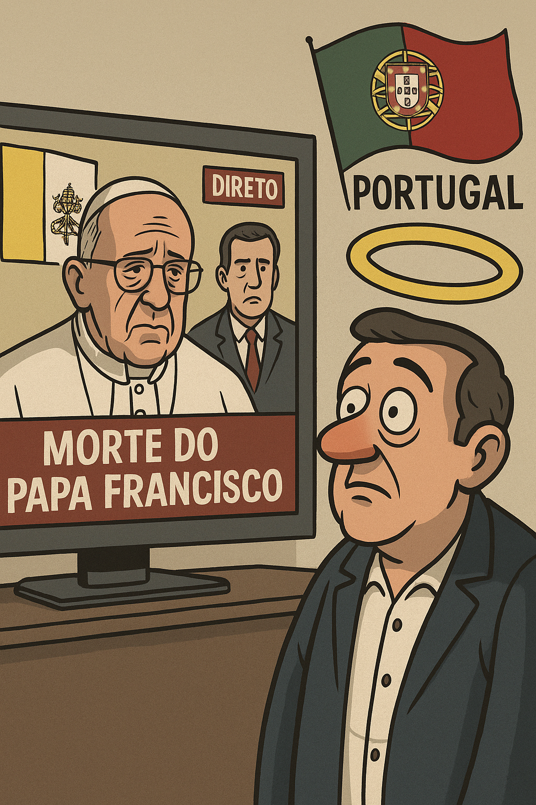

Publicado em 2025-04-22 19:30:07
Por Francisco Gonçalves – fragmentoscaos.eu
Portugal entrou oficialmente em modo sacristia. Durante três dias — e a contar — fomos todos, por decreto mediático, convidados a ajoelhar perante os ecrãs e entoar loas ao falecido Papa Francisco.
Não importa se és ateu, agnóstico, muçulmano ou apenas um cidadão exausto de tanta encenação — tinhas de assistir. Era obrigatório. Estava em todo o lado. Todos os canais. Todos os jornais. Todos os programas. Todos os políticos. Todos os comentadores. Todos os clérigos. Todos os ex-católicos reconvertidos à última hora.
O Papa morreu. E com ele, morreu também a programação televisiva, a pluralidade editorial, e o direito de mudar de canal sem tropeçar numa missa, num terço, ou num político emocionado a dizer que “Francisco era um homem do povo”.
Ah, que ironia!
Os mesmos que vivem murados no privilégio, que assinam contratos ruinosos com empresas amigas, que desprezam o povo com impostos, cortes e discursos de Excel — são agora súbitos devotos da humildade papal.
O primeiro-ministro, os líderes partidários, ex-presidentes, ex-bispos, ex-tudo — fizeram fila para declarar o quanto o Papa Francisco tocou os seus corações.
Tocou, sim — mas não o suficiente para mudarem de vida, nem de práticas.
É o beato país do comentário eterno. Onde o tempo pára para chorar o Papa, mas não há tempo para falar das pensões mínimas, dos sem-abrigo, dos jovens sem futuro.
Onde a fé é usada como cortina, e a emoção como distração.
O ridículo atingiu picos bíblicos:
Tudo em nome da “homenagem”.
Tudo em nome da “figura inspiradora”.
Tudo em nome de… evitar que o povo pense noutras coisas.
E assim seguimos. Com a cruz ao peito e a mão no bolso do contribuinte.
Porque nesta república secular, a fé é privada, mas o culto é obrigatório.
E se não te juntares à choradeira mediática, és insensível, frio, ou pior: blasfemo civil.
Mas há quem não ajoelhe. Há quem não se comova com teatrinhos. Há quem prefira a verdade à devoção plástica.
Esta crónica é por ti, leitor herético do bom senso.
No país do comentário eterno, resistir é um acto laico de lucidez.